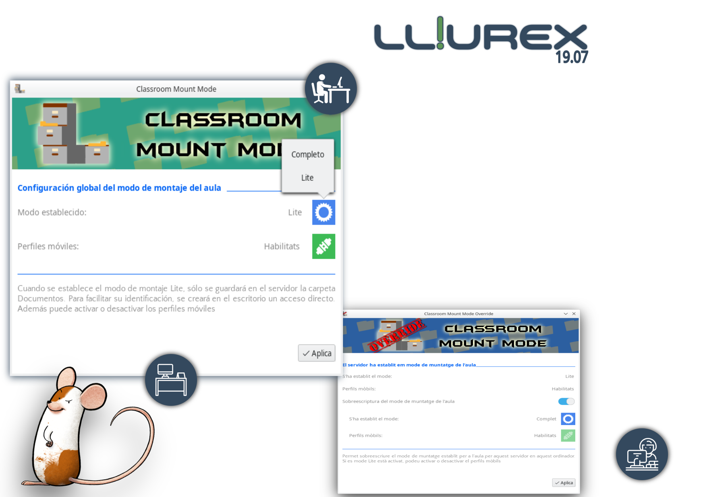

<div class="main wide">

<div class="text justify" style="position:absolute; top:80px; left:400px;right: 80px;">

<div><h1 style="color: rgb(52,73,94); text-decoration-style: bold;margin-bottom: 6px">Clasroom mount mode</h1></div>
<div><h4 style="font-size:16px;line-height: 1.3em;width:300px;">
<p style="margin-bottom: 6px;">Choose the classroom model you want:</p>
	<div>
		<li>LITE: If you only want a desktop folder to be mounted. </li>
	</div>
	<div>
		<li>FULL: The usual way where browser profiles, desktop preferences, Documents and Desktop folders are copied.</li>
	</div>
</h4></div>

</div>



</div>